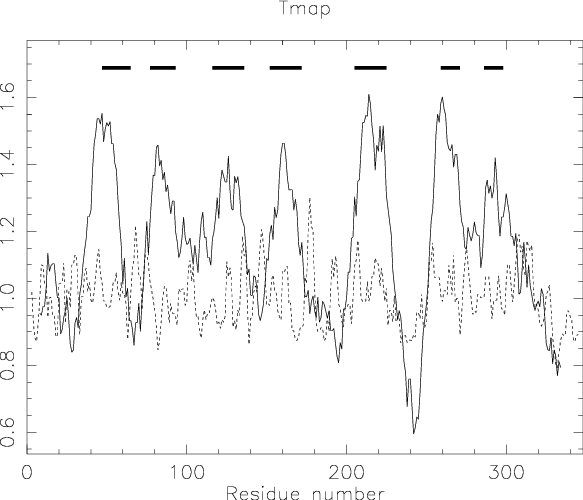

|
|
tmap |
Please help by correcting and extending the Wiki pages.
tmap predicts transmembrane segments for an aligned set of protein sequences, utilising the algorithm described in: "Persson, B. & Argos, P. (1994) Prediction of transmembrane segments in proteins utilising multiple sequence alignments J. Mol. Biol. 237, 182-192.". A plot of the propensities to form the middle and the end of transmembrane regions is output. Bars are displayed in the plot above the regions predicted as being most likely to form transmembrane regions. The transmembrane regions for the complete alignment are given first, followed by the predictions for each individual sequence in the alignment.
% tmap opsd.msf -out tmap.res -graph cps Predict and plot transmembrane segments in protein sequences Created tmap.ps |
Go to the input files for this example
Go to the output files for this example
Predict and plot transmembrane segments in protein sequences
Version: EMBOSS:6.2.0
Standard (Mandatory) qualifiers:
[-sequences] seqset File containing a sequence alignment
-graph xygraph [$EMBOSS_GRAPHICS value, or x11] Graph type
(ps, hpgl, hp7470, hp7580, meta, cps, x11,
tek, tekt, none, data, xterm, png, gif)
[-outfile] report [*.tmap] Output report file name
Additional (Optional) qualifiers: (none)
Advanced (Unprompted) qualifiers: (none)
Associated qualifiers:
"-sequences" associated qualifiers
-sbegin1 integer Start of each sequence to be used
-send1 integer End of each sequence to be used
-sreverse1 boolean Reverse (if DNA)
-sask1 boolean Ask for begin/end/reverse
-snucleotide1 boolean Sequence is nucleotide
-sprotein1 boolean Sequence is protein
-slower1 boolean Make lower case
-supper1 boolean Make upper case
-sformat1 string Input sequence format
-sdbname1 string Database name
-sid1 string Entryname
-ufo1 string UFO features
-fformat1 string Features format
-fopenfile1 string Features file name
"-graph" associated qualifiers
-gprompt boolean Graph prompting
-gdesc string Graph description
-gtitle string Graph title
-gsubtitle string Graph subtitle
-gxtitle string Graph x axis title
-gytitle string Graph y axis title
-goutfile string Output file for non interactive displays
-gdirectory string Output directory
"-outfile" associated qualifiers
-rformat2 string Report format
-rname2 string Base file name
-rextension2 string File name extension
-rdirectory2 string Output directory
-raccshow2 boolean Show accession number in the report
-rdesshow2 boolean Show description in the report
-rscoreshow2 boolean Show the score in the report
-rstrandshow2 boolean Show the nucleotide strand in the report
-rusashow2 boolean Show the full USA in the report
-rmaxall2 integer Maximum total hits to report
-rmaxseq2 integer Maximum hits to report for one sequence
General qualifiers:
-auto boolean Turn off prompts
-stdout boolean Write first file to standard output
-filter boolean Read first file from standard input, write
first file to standard output
-options boolean Prompt for standard and additional values
-debug boolean Write debug output to program.dbg
-verbose boolean Report some/full command line options
-help boolean Report command line options and exit. More
information on associated and general
qualifiers can be found with -help -verbose
-warning boolean Report warnings
-error boolean Report errors
-fatal boolean Report fatal errors
-die boolean Report dying program messages
-version boolean Report version number and exit
|
| Qualifier | Type | Description | Allowed values | Default |
|---|---|---|---|---|
| Standard (Mandatory) qualifiers | ||||
| [-sequences] (Parameter 1) |
seqset | File containing a sequence alignment | Readable set of sequences | Required |
| -graph | xygraph | Graph type | EMBOSS has a list of known devices, including ps, hpgl, hp7470, hp7580, meta, cps, x11, tek, tekt, none, data, xterm, png, gif | EMBOSS_GRAPHICS value, or x11 |
| [-outfile] (Parameter 2) |
report | Output report file name | Report output file | <*>.tmap |
| Additional (Optional) qualifiers | ||||
| (none) | ||||
| Advanced (Unprompted) qualifiers | ||||
| (none) | ||||
| Associated qualifiers | ||||
| "-sequences" associated seqset qualifiers | ||||
| -sbegin1 -sbegin_sequences |
integer | Start of each sequence to be used | Any integer value | 0 |
| -send1 -send_sequences |
integer | End of each sequence to be used | Any integer value | 0 |
| -sreverse1 -sreverse_sequences |
boolean | Reverse (if DNA) | Boolean value Yes/No | N |
| -sask1 -sask_sequences |
boolean | Ask for begin/end/reverse | Boolean value Yes/No | N |
| -snucleotide1 -snucleotide_sequences |
boolean | Sequence is nucleotide | Boolean value Yes/No | N |
| -sprotein1 -sprotein_sequences |
boolean | Sequence is protein | Boolean value Yes/No | N |
| -slower1 -slower_sequences |
boolean | Make lower case | Boolean value Yes/No | N |
| -supper1 -supper_sequences |
boolean | Make upper case | Boolean value Yes/No | N |
| -sformat1 -sformat_sequences |
string | Input sequence format | Any string | |
| -sdbname1 -sdbname_sequences |
string | Database name | Any string | |
| -sid1 -sid_sequences |
string | Entryname | Any string | |
| -ufo1 -ufo_sequences |
string | UFO features | Any string | |
| -fformat1 -fformat_sequences |
string | Features format | Any string | |
| -fopenfile1 -fopenfile_sequences |
string | Features file name | Any string | |
| "-graph" associated xygraph qualifiers | ||||
| -gprompt | boolean | Graph prompting | Boolean value Yes/No | N |
| -gdesc | string | Graph description | Any string | |
| -gtitle | string | Graph title | Any string | |
| -gsubtitle | string | Graph subtitle | Any string | |
| -gxtitle | string | Graph x axis title | Any string | Residue number |
| -gytitle | string | Graph y axis title | Any string | |
| -goutfile | string | Output file for non interactive displays | Any string | tmap |
| -gdirectory | string | Output directory | Any string | |
| "-outfile" associated report qualifiers | ||||
| -rformat2 -rformat_outfile |
string | Report format | Any string | seqtable |
| -rname2 -rname_outfile |
string | Base file name | Any string | |
| -rextension2 -rextension_outfile |
string | File name extension | Any string | |
| -rdirectory2 -rdirectory_outfile |
string | Output directory | Any string | |
| -raccshow2 -raccshow_outfile |
boolean | Show accession number in the report | Boolean value Yes/No | N |
| -rdesshow2 -rdesshow_outfile |
boolean | Show description in the report | Boolean value Yes/No | N |
| -rscoreshow2 -rscoreshow_outfile |
boolean | Show the score in the report | Boolean value Yes/No | Y |
| -rstrandshow2 -rstrandshow_outfile |
boolean | Show the nucleotide strand in the report | Boolean value Yes/No | Y |
| -rusashow2 -rusashow_outfile |
boolean | Show the full USA in the report | Boolean value Yes/No | N |
| -rmaxall2 -rmaxall_outfile |
integer | Maximum total hits to report | Any integer value | 0 |
| -rmaxseq2 -rmaxseq_outfile |
integer | Maximum hits to report for one sequence | Any integer value | 0 |
| General qualifiers | ||||
| -auto | boolean | Turn off prompts | Boolean value Yes/No | N |
| -stdout | boolean | Write first file to standard output | Boolean value Yes/No | N |
| -filter | boolean | Read first file from standard input, write first file to standard output | Boolean value Yes/No | N |
| -options | boolean | Prompt for standard and additional values | Boolean value Yes/No | N |
| -debug | boolean | Write debug output to program.dbg | Boolean value Yes/No | N |
| -verbose | boolean | Report some/full command line options | Boolean value Yes/No | Y |
| -help | boolean | Report command line options and exit. More information on associated and general qualifiers can be found with -help -verbose | Boolean value Yes/No | N |
| -warning | boolean | Report warnings | Boolean value Yes/No | Y |
| -error | boolean | Report errors | Boolean value Yes/No | Y |
| -fatal | boolean | Report fatal errors | Boolean value Yes/No | Y |
| -die | boolean | Report dying program messages | Boolean value Yes/No | Y |
| -version | boolean | Report version number and exit | Boolean value Yes/No | N |
!!AA_MULTIPLE_ALIGNMENT 1.0
opsd.msf MSF: 354 Type: P 15/07/06 CompCheck: 5414 ..
Name: OPSD_HUMAN Len: 354 Check: 2647 Weight: 50.00
Name: OPSD_XENLA Len: 354 Check: 2767 Weight: 50.00
//
1 50
OPSD_HUMAN MNGTEGPNFYVPFSNATGVVRSPFEYPQYYLAEPWQFSMLAAYMFLLIVL
OPSD_XENLA MNGTEGPNFYVPMSNKTGVVRSPFDYPQYYLAEPWQYSALAAYMFLLILL
51 100
OPSD_HUMAN GFPINFLTLYVTVQHKKLRTPLNYILLNLAVADLFMVLGGFTSTLYTSLH
OPSD_XENLA GLPINFMTLFVTIQHKKLRTPLNYILLNLVFANHFMVLCGFTVTMYTSMH
101 150
OPSD_HUMAN GYFVFGPTGCNLEGFFATLGGEIALWSLVVLAIERYVVVCKPMSNFRFGE
OPSD_XENLA GYFIFGPTGCYIEGFFATLGGEVALWSLVVLAVERYIVVCKPMANFRFGE
151 200
OPSD_HUMAN NHAIMGVAFTWVMALACAAPPLAGWSRYIPEGLQCSCGIDYYTLKPEVNN
OPSD_XENLA NHAIMGVAFTWIMALSCAAPPLFGWSRYIPEGMQCSCGVDYYTLKPEVNN
201 250
OPSD_HUMAN ESFVIYMFVVHFTIPMIIIFFCYGQLVFTVKEAAAQQQESATTQKAEKEV
OPSD_XENLA ESFVIYMFIVHFTIPLIVIFFCYGRLLCTVKEAAAQQQESLTTQKAEKEV
251 300
OPSD_HUMAN TRMVIIMVIAFLICWVPYASVAFYIFTHQGSNFGPIFMTIPAFFAKSAAI
OPSD_XENLA TRMVVIMVVFFLICWVPYAYVAFYIFTHQGSNFGPVFMTVPAFFAKSSAI
301 350
OPSD_HUMAN YNPVIYIMMNKQFRNCMLTTICCGKNPLGD.DEASATVSKTETSQVAPA~
OPSD_XENLA YNPVIYIVLNKQFRNCLITTLCCGKNPFGDEDGSSAATSKTEASSVSSSQ
351
OPSD_HUMAN ~~~~
OPSD_XENLA VSPA
|
########################################
# Program: tmap
# Rundate: Fri 15 Jan 2010 12:00:00
# Commandline: tmap
# [-sequences] ../../data/opsd.msf
# -outfile tmap.res
# -graph cps
# Report_format: seqtable
# Report_file: tmap.res
########################################
#=======================================
#
# Sequence: Consensus from: 1 to: 354
# HitCount: 7
#=======================================
Start End TransMem Sequence
43 70 1 YMFLLIvLGxPINFlTLyVTvQHKKLRT
71 98 2 PLNYILLNLxxAdxFMVLxGFTxTlYTS
112 140 3 lEGFFATLGGEiALWSLVVLAiERYvVVC
148 176 4 FGENHAIMGVAFTWvMALaCAAPPLxGWS
201 229 5 ESFVIYMFvVHFTIPmIiIFFCYGqLvxT
256 276 6 IMVixFLICWVPYAxVAFYIF
285 305 7 PiFMTiPAFFAKSaAIYNPVI
#---------------------------------------
#---------------------------------------
#=======================================
#
# Sequence: OPSD_HUMAN from: 1 to: 354
# HitCount: 7
#=======================================
Start End TransMem Sequence
43 70 1 YMFLLIVLGFPINFLTLYVTVQHKKLRT
71 98 2 PLNYILLNLAVADLFMVLGGFTSTLYTS
112 140 3 LEGFFATLGGEIALWSLVVLAIERYVVVC
148 176 4 FGENHAIMGVAFTWVMALACAAPPLAGWS
201 229 5 ESFVIYMFVVHFTIPMIIIFFCYGQLVFT
256 276 6 IMVIAFLICWVPYASVAFYIF
285 305 7 PIFMTIPAFFAKSAAIYNPVI
#---------------------------------------
#---------------------------------------
#=======================================
#
# Sequence: OPSD_XENLA from: 1 to: 354
# HitCount: 7
#=======================================
Start End TransMem Sequence
43 70 1 YMFLLILLGLPINFMTLFVTIQHKKLRT
71 98 2 PLNYILLNLVFANHFMVLCGFTVTMYTS
112 140 3 IEGFFATLGGEVALWSLVVLAVERYIVVC
148 176 4 FGENHAIMGVAFTWIMALSCAAPPLFGWS
201 229 5 ESFVIYMFIVHFTIPLIVIFFCYGRLLCT
256 276 6 IMVVFFLICWVPYAYVAFYIF
285 305 7 PVFMTVPAFFAKSSAIYNPVI
#---------------------------------------
#---------------------------------------
#---------------------------------------
# Total_sequences: 2
# Total_length: 702
# Reported_sequences: 3
# Reported_hitcount: 21
#---------------------------------------
|

A plot of the propensities to form the middle (solid line) and the end (dashed line) of transmembrane regions is output.
Bars are displayed in the plot above the regions predicted as being most likely to form transmembrane regions.
The text file (specified by the -outfile option) gives a summary of these regions.
The transmembrane regions for the complete alignment are given first, followed by the predictions for each individual sequence in the alignment.
Two sets of transmembrane propensity values are then used for the calculations: one for the middle, hydrophobic portion and one for the terminal regions of the transmembrane sequence spans. Average propensity values are calculated for each position along the alignment, with the contribution from each sequence weighted according to its dissimilarity relative to the other aligned sequences.
Eight-residue segments are considered as potential cores of transmembrane segments and elongated if thier middle propensity values are above a threshold. End propensity values are also considered as stop signals. Only helices with a length of 15 to 29 residues are allowed and corrections for strictly conserved charged residues are made.
The method is more successful than predictions based upon single sequences alone.
| Program name | Description |
|---|---|
| garnier | Predicts protein secondary structure using GOR method |
| helixturnhelix | Identify nucleic acid-binding motifs in protein sequences |
| hmoment | Calculate and plot hydrophobic moment for protein sequence(s) |
| pepcoil | Predicts coiled coil regions in protein sequences |
| pepnet | Draw a helical net for a protein sequence |
| pepwheel | Draw a helical wheel diagram for a protein sequence |
This application was modified for inclusion in EMBOSS by
Ian Longden (il © sanger.ac.uk)
Sanger Institute, Wellcome Trust Genome Campus, Hinxton,
Cambridge, CB10 1SA, UK.